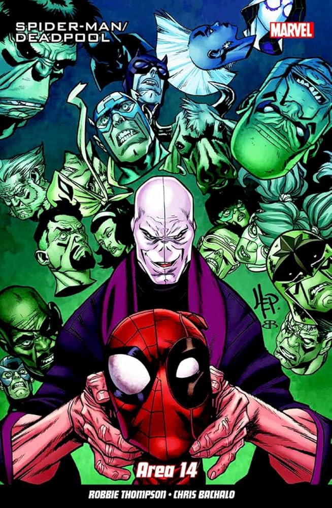

El arco argumental "Area 14" en la serie "Spider-Man/Deadpool" es uno de los más destacados y complejos de la colaboración entre estos dos personajes. Abarcando los números 21 al 23, esta historia, escrita por Joe Kelly con arte de Ed McGuinness, presenta una misión en un laboratorio secreto lleno de experimentos genéticos ilegales.
Lo más importante de "Area 14" es cómo la trama combina acción intensa con dilemas éticos. Spider-Man y Deadpool se encuentran en una instalación clandestina donde se llevan a cabo experimentos genéticos en criaturas mutantes. Este escenario plantea preguntas morales sobre la ciencia y la ética, y obliga a ambos héroes a confrontar sus propias creencias y métodos. Mientras Spider-Man mantiene su estricta moralidad y busca salvar a las criaturas inocentes, Deadpool, aunque más pragmático y a menudo inclinado a la violencia, muestra un lado más reflexivo influenciado por Spider-Man.
La historia resalta el contraste entre los enfoques de los dos personajes. Spider-Man, con su código ético inquebrantable, representa la justicia y la compasión. Deadpool, conocido por su caos y métodos extremos, aporta una perspectiva más práctica pero se ve influenciado positivamente por los valores de Spider-Man. Este contraste no solo subraya sus diferencias sino que también muestra cómo pueden complementarse y aprender uno del otro.
Además de los dilemas éticos, "Area 14" está cargado del humor característico de la serie. Deadpool rompe la cuarta pared con frecuencia, ofreciendo comentarios sarcásticos y referencias culturales modernas que añaden un toque cómico a la narrativa. Esto ayuda a equilibrar la seriedad de la trama, proporcionando momentos de alivio cómico en medio de la tensión.
En resumen, "Area 14" es un arco crucial que destaca por su combinación de acción, humor y exploración ética. La misión en el laboratorio secreto no solo proporciona entretenimiento, sino que también profundiza en la relación entre Spider-Man y Deadpool, mostrando cómo dos héroes con enfoques tan diferentes pueden trabajar juntos y evolucionar.
Debido a estas historias Deadpool y Spider-Man lograro forjar un vinculo ammistoso aun mas grande, debido a que Deadpool a visto a Spider-Man como un ehemplo a seguir.
Haci es como concluye la Historia de Origen de la segunda dupla Mortal y Comica Deadpool and Spider-Man